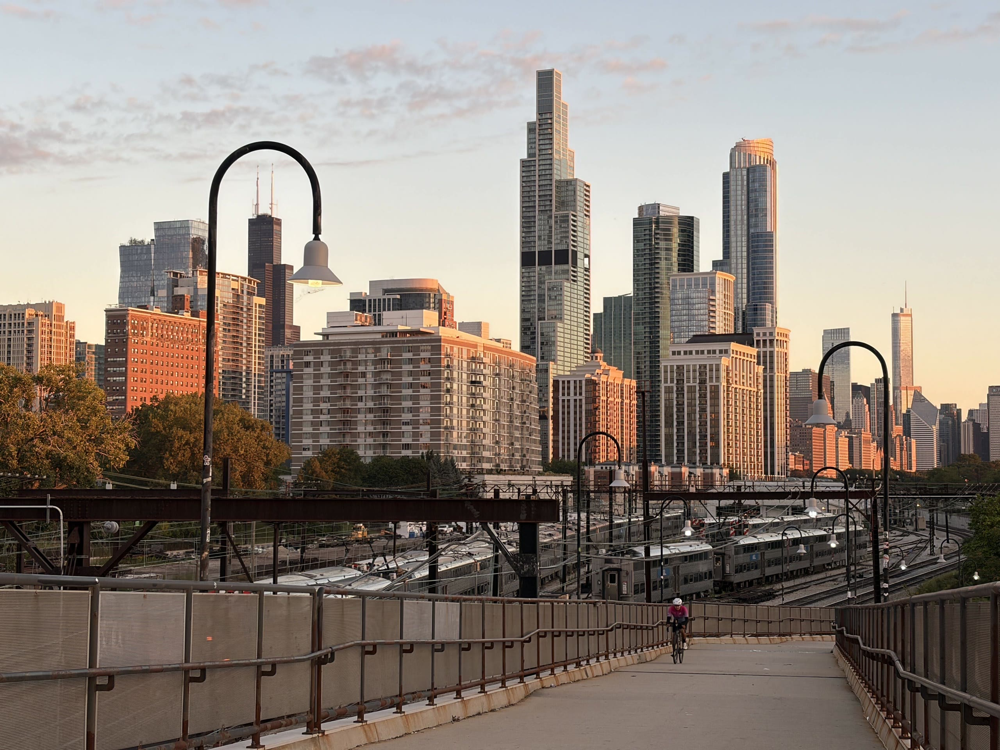
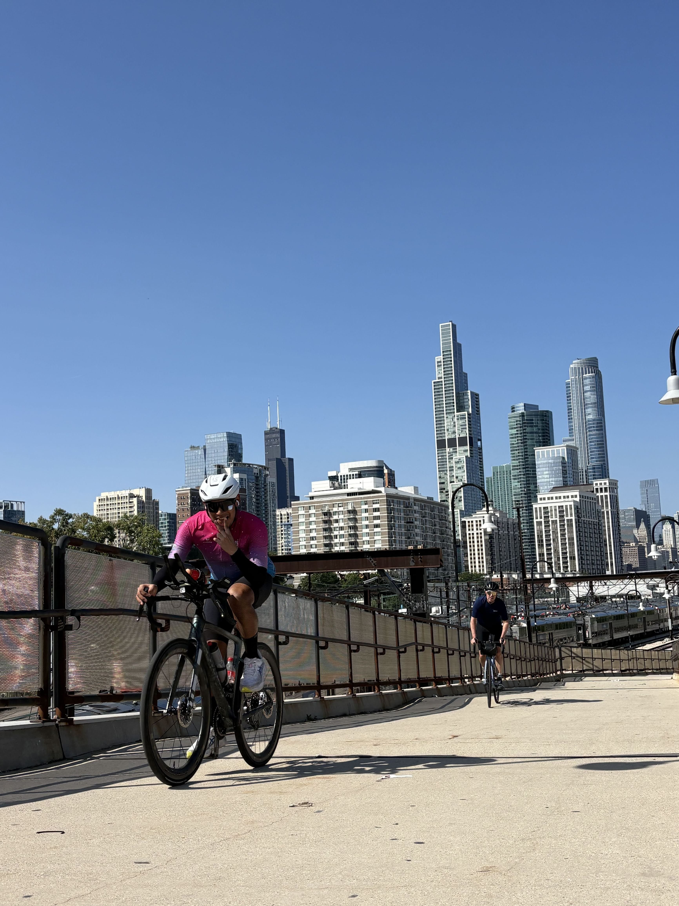
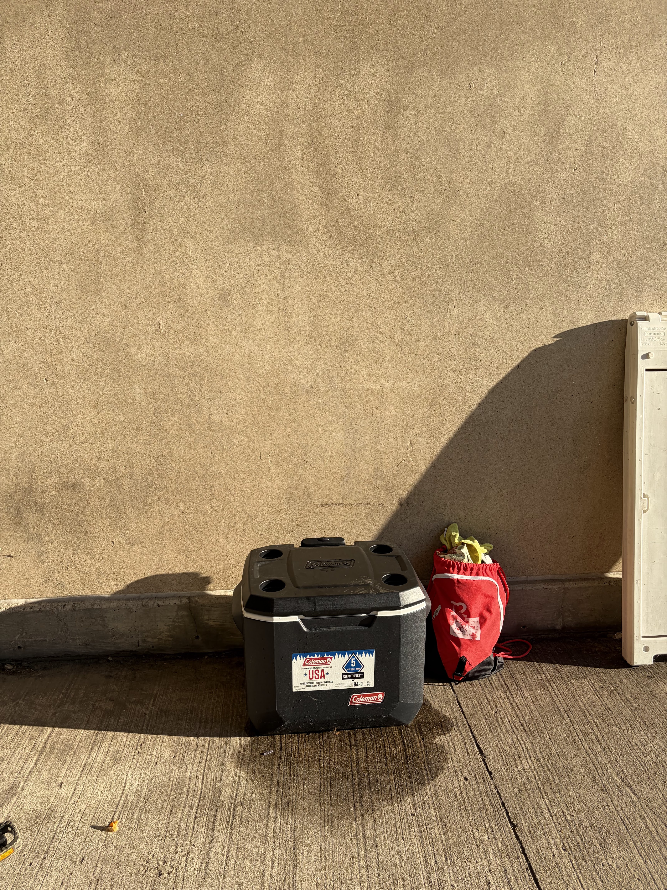

No gravel experience. No real hills. Just 550 miles, 40,000 feet of climbing, and one very long experiment in figuring it out.
I signed up for the Driftless Dagger because I thought it would be funny. I also did not want to be called a pavement princess anymore.
Picture it: a Chicago cyclist whose longest climb is 424 feet, with no gravel experience, no real descending experience, and a road bike, taking on the brutal Driftless region in a 550-mile, self-supported ultra. What could go wrong?
Plenty. I finished 4th anyway.
The Dagger was going to be a completely different animal from Mishigami. Mishigami rewards endurance, resource management, and good decisions over several days. The Dagger is shorter, but it packs in roughly 40,000 feet of climbing and a whole lot of gravel, so raw power, technical skill, and handling the terrain matter far more. Those are not exactly my strengths.

Still going at it at mile 96. Photo credit: Kris Lucius.

Keeping high spirits with 9k feet remaining. Photo credit: Phil Fox.

Basecamp cooler and gear bag for the repeats. Photo credit: Angel C.
An Everest is roughly 29,000 feet of climbing in a single ride, typically by repeating one climb over and over, with no sleep. It is as brutal as it sounds. I'm somewhat infamous for riding an Everest and an Everest ROAM in Chicago in 2024. I never thought I'd attempt another one, but the Dagger raised questions only an Everest could answer:
Can my legs even handle this much elevation gain?
Can I sustain a continuous climbing effort? An Everest is done with no sleep.
How do my feet hold up through hours of push-and-coast?
There was a mental angle, too. An Everest in Chicago means at least 970 repeats of the same bridge. If I could put myself through that, I figured I could handle however many hills the Dagger threw at me. The Dagger overview showed somewhere between 111 and 155 climbs, depending on the source. The Chicago Everest is quite literally death by a thousand cuts.
Everest reached. Video credit: Angel C.
Left: Testing tires on the packed gravel. Right: Water crossing on the DPRT.
DPRT 165k. My one long “gravel” ride. Gravel in the sense that it had gravel. It was flat and the surface was well maintained, so it taught me very little.
The burnout. After Mishigami (read the recap), I had no race planned. The Dagger floated around in my head, but I wasn't inclined to commit. The volume Mishigami demanded had left me burned out, and I wanted a real break. Sarah Rice ultimately convinced me to take it on, but signing up was a “funny” choice, and I had little motivation to train for something I couldn't really train for in Chicago. The plan was intervals and hope.
Knowing the race was completely out of my ballpark also kept my expectations and competitive drive low. I'd obviously give it my best, but I'd be at a huge disadvantage.
The cold is usually my weakness. Ask my Chicago friends. So when the Dagger forecast dipped to 33°F, I treated it as a problem to solve before the race, not something to survive during it.
The forecast looked like a rollercoaster: a low of 38°F, then 55°F, then who knows. There was a very slim chance of rain on race day itself, but plenty of rainy days leading up to it. (In hindsight, a tire with a slick center tread would have suited all that pavement.)
The new layers, ready for testing.
My rule: I'd rather run warmer than colder, because I can always find ways to improve breathability. The 33°F in the forecast worried me, because the peak-and-valley terrain and a course that hugs rivers would push the real feel much lower. With only 16 days until the race, I wanted most of my warmth to come from the base layer under the Castelli jacket I already owned, so I bought two Assos skin layers and winter bib tights to test.
The experiment was hindered by a rush of warm weather, so I did a 100km ride near the lake in 55–70°F with a summer jersey over each skin layer. One layer felt great but too warm on the warmer stretches, and it chafed my neck. The other felt chillier but manageable up to 70°F. With one more day, I would have tested it under the jacket in the low 50s. My legs tend to be fine in the cold, so I didn't experiment with really warm bibs (see appendix).
No hydration vest. Unlike Mishigami, I didn't want to carry one. I had no idea how my back would react to extra weight on steep climbs, so I chose comfort and reduced risk.
Only $60, cheaper than any cycling shoe I've owned. Apparently the cycling label is the expensive part.
Flat pedals and trail running shoes. This was a last-second decision. My foot pain hadn't improved enough to feel comfortable at the Dagger. I had worked with my bike fitter, Sarah Rice, on the problem using my usual LOOK cleats, but the Dagger would require SPD pedals so I could walk whenever the grade or terrain got crazy. Testing on LOOK cleats couldn't transfer directly to SPD shoes.
One thing I learned on my Everest is that I could only handle cleats for 120 miles (13.5 hours) of smash-and-coast riding. After that, I needed flat shoes to endure the remaining 80 miles (8.5 hours). With two weeks left, I could keep experimenting or pivot to flats, which were unlikely to give me hot foot. I weighed the pros and cons and went with flats. They'd let me move my feet freely, get off the bike when things got sketchy, and walk more easily when I had to.
No rain protection. Luckily there was no substantial chance of rain in my scouting. If there had been, I'd have added a rain or wind shell, probably a cheap one.
No tough gravel testing. At Mishigami I know which tires are optimal for the terrain. Here I could only hope. I leaned toward grippy tires in the biggest size my Roubaix could fit, 40mm, and I never got to test them in mud or wet conditions.
The drivetrain. I ran a 2x setup: 46/33 chainrings with a 10–36T cassette. I had no significant double-digit grades to test the gearing on, but 33:36 is close to 1:1 (0.92). Surely that would be enough?
(Foreshadowing.)
Seeing everyone's setups at the start line, I was immediately concerned about my cassette. Plenty of riders were running 1x with a massive cassette, and their chainrings looked smaller than my small ring (maybe 30T or 32T).
Josh Zuhlke's bike, with (likely) 32T chainring and a 10–52T cassette. Thanks to @midwestultracycling and @driftlessdagger. See the Bikes Of Driftless Dagger.
I ran the numbers. A 1x drivetrain with a 30T ring and a 10–52T cassette gives a gear ratio of 0.58 to 3.0, versus my 0.92 to 4.60. That meant I'd have the advantage on descents, assuming I could handle them and push into them. With my gravel inexperience (and descents this sharp) I wouldn't, so any gains would be marginal. On the climbs, my lowest gear would be about 33 to 58% harder than theirs under normal conditions, and probably worse in gravel and in an ultra setting.
The shakeout ride revealed more gaps in my planning:
The shakeout also couldn't show me how brutal the gravel would be. The route was mostly paved and none of the climbs were gravel, so I had no idea whether my gravel tires would handle the surface any better than road tires would.
I knew a few things going in. The first: I would not win.
The roads ahead: rolling gravel with little sign of civilization.
This is a shorter course. Raw power and optimal course execution matter more here than fatigue and sleep management. I'm not known for explosive power; I'm known for managing the mental and long-game side of ultras. I estimated about 48 hours, short enough that sleep management wouldn't be a major race element.
I had zero gravel experience, and none with spiky climbs and descents. I'd be figuring it out at the start and adjusting as needed, which you can't really afford in a short race.
The field was full of strong hitters. Quite a few participants had done Unbound or DOOM. Unbound is an extremely competitive gravel event, and DOOM is an ultra-harsh bikepacking and mountain bike event. Plenty of riders had gravel or hilly-region experience. I have bridges that top out at 7.5%.
Through the grapevine, I knew Nick Dehaan was a strong rider. He does a lot of road ultras, so he was the best data point I could find for race-pace simulations. I knew he was significantly stronger than me, so wherever he stood on the leaderboard would be a marker for how competitive I could be.
Austin Denton was another benchmark. He had finished second at Mishigami, 3 hours 46 minutes ahead of me, and going into the Dagger I wanted to see how close I could get. I knew he could handle long intervals on the bike; I didn't yet know just how fierce a competitor he was. I didn't research the field much more than that. I knew it would be a race of my own pace.
The course had almost no history. It had only been run once, with 2 riders signed up. One scratched shortly after mile 100, so a 50% completion rate with very limited knowledge of the difficulty.
I asked my Chicago Rando friends, several of whom are adamant gravel cyclists. I was warmly told to start with Gravel Worlds, with a strong word of caution that the Driftless is unforgiving and has limited resupply.
My Roubaix setup for the Dagger, before switching to flat pedals.
And I couldn't afford a gravel bike. Having a broken bike at Mishigami (recap) and buying a brand-new S-Works Roubaix left my wallet struggling. The Roubaix is a road endurance bike. Thanks to Future Shock 3.0 it handles bumpy surfaces, but tire clearance tops out at 40mm.
The primary goal was to survive. After the shakeout ride, it was clear that the descents would be terrifying given my experience and my drive to go fast, so I planned to start near the back to avoid early accidents and more aggressive riders.
Pacing data. I only had so much to work with. I anchored my estimates to race director Jack Peck's charity goal (a 42-hour finish, or a 13 mph average elapsed pace) and to Baby Dagger historical data. The full Dagger had very little data, and Andy Boone rode single-speed under no race pressure, so his ride only gave me a lower bound.
Before the race, I used my ultra-racing calculator to generate ETAs on a low and high bound. The point was to see how going fast or slow would change which stores I'd find open or closed, and to identify the critical points: the stops where I needed to push to be safe.
Water from a campground. In planning, I did something I've never done: relying on a campground for water. That was a risk. I wasn't sure exactly where the spigot would be, whether it would be turned off for the cold, whether I'd have GPS or satellite to find it in the dark, or whether the water was truly drinkable (stomach issues, anyone?).
The napkin math:
If I finished 550 miles in 43.5 hours, I'd average 12.6 mph moving, or about 11.6 mph elapsed. 550 miles ÷ 11.6 mph ≈ 47.4 hours. So I estimated about 48 hours.
Blue pins mark planned stops; yellow pins mark possible intermediate stops; black arrows show wind direction and strength.
The race plan was simple. See my Dagger race plan. A 48-hour race doesn't warrant sleep, so I wouldn't sleep at all and had to be ready to ride through the night and the cold. The risk was that my math came from paved roads and very limited gravel riding. If the race went well past 48 hours, no-sleep would start working against me, leaving me with unplanned naps, which is a slippery slope.
Effort. With so little data, I wanted to stay conservative so I didn't kill my legs early. I set a general power target for the course and a peak power target for climbs. Climbs stayed in low-end tempo (Z3), everything else in low endurance (Z2), and descents in active recovery (Z1). I'd walk a climb if either of these were true:
Nine splits. I split the race at gas stations and the campground, from 42.7 to 80 miles apart (see appendix). I wanted frequent resupply because I didn't know how fast or slow I'd be, and I wanted easy bailouts rather than long splits. Long splits felt feasible in the cold, since a lower sweat rate meant I'd need less water, but I stayed conservative.
Nutrition. I did the math on what to eat to minimize the likelihood of cramping. At each stop, I'd chug a Gatorlyte and a soda or apple juice and eat hot food, about 1,000 mg of sodium. For each stretch, I'd carry Nerds Gummy Clusters, a couple of sodas or apple juices, a Gatorade, and Slim Jims (see appendix).
Caffeine. None for the first 24 hours. After that, slow-release caffeine pills when drowsy, and instant caffeine drinks kept to a minimum.
A few days before the Dagger, I picked a mantra to carry through the race. It comes from Hells 500, the group behind the official Hall of Fame for Everesting.com. Their words are printed inside my Everesting 10K Challenge Finisher jersey:
The mantra inside my Everesting 10K Challenge jersey.
YOU ARE A KEEPER OF THE CLOUD.
YOU ARE THE SILENT ASSASSIN.
THE GROOMED KILLER, THE SILVER BULLET.
YOU ARE SVELTE, SMART, AND SHARP.THE CLOUD BOLDLY EMBLAZONED ON YOUR SHOULDER IS REPRESENTATIVE OF THE WET AND RAINY WINTER ROAD,
THE PATH LESS TRAVELLED,
WHEN NO ONE ELSE IS OUT BUT YOU.YOU ARE CREW.
Hells 500, inside my Everesting 10K jersey
I had read those words before. This time I wanted to use them on purpose. Two phrases stuck: Keeper of the Cloud and Silver Bullet.
Keeper of the Cloud was the endurance side. I already knew what it's like to be alone on the road in miserable conditions, still moving when the weather is bad, the hours are long, and nobody else is out there. The Everesting efforts behind this jersey demanded that kind of persistence, through endless repeats of the same climb. The Dagger would demand it differently: hundreds of miles of unfamiliar gravel, sustained climbs, cold nights, and decisions made while increasingly exhausted.
Silver Bullet was the racing side. I wasn't there only to survive 550 miles and roughly 40,000 feet of climbing. I wanted to compete and see how far up the field I could move, even though my preparation left plenty of unanswered questions about what I could handle.
I started in 9th. As the riders ahead pulled away, it would have been easy to chase them and turn the opening miles into a contest of who was willing to spend the most energy first. Instead, I trusted that there was still a race to ride over the next two days. I kept moving, stayed patient, and gradually made ground.
As the race stretched into the night, those two phrases were the ones I kept coming back to. One reminded me to endure what was in front of me; the other reminded me I was still racing. I didn't need to be the strongest rider in every moment. I needed to keep making decisions that gave me a chance to be stronger when it mattered.
I wasn't a perfectly prepared climbing machine. My training hadn't replicated the course, my pacing wasn't flawless, and I ran into problems I couldn't have fully anticipated. But I could still be deliberate, adapt, and keep moving. The mantra let me hold both sides of the effort: the patience to finish an event like this and the ambition to race it.
I went from 9th at the start to 3rd on the road before finishing 4th. It wasn't a win, and I never expected one, but it was proof that I could do more than hang on. I could endure the course and compete with riders who had far more experience in this terrain.
You are a Keeper of the Cloud. You are the Silver Bullet.
Those words didn't guarantee an outcome. They reminded me what I had chosen to do, and how I wanted to do it, when the race got hard.
The race started at 7am. I hit start on my bike computer and immediately realized I had never set up my gravel data screens. The Coros Dura was using COROS's default gravel data screens and layouts, and unlike my Garmin, it won't let me edit data screens while riding. I didn't feel like stopping to figure it out, so I had to scroll constantly between the map, my 3-second power, and my speed. Those three fields mattered most, and I had to stay diligent to keep my power from skyrocketing out of range.
The first stretch was no joke. Jack Peck called it “a tame trail,” which might have been true if I hadn't been in a bunch of riders with no idea what the trail did next. I had no close calls off the corners, but I almost ran into Sarah Rice on a drop because of my limited braking and timing. Right after the trail came a steep decline where we had to walk.
Still locked onto the trail. Thanks to @midwestultracycling and @driftlessdagger.
Eyes on the rider ahead. Thanks to @midwestultracycling and @driftlessdagger.
Mile 19thThen the race got lonely. Not many people were in sight, though the tracker showed riders within a mile or two. I was in 9th, and the front of the pack, particularly the top 5, was pulling away faster than I was holding up.
Was I pacing a 550-mile race badly?
I wanted to push, but the risk of burning too many matches was higher on a hilly course.
Mile 14 (hour 1)8th The first person I saw was Mike Monterusso. The hills made it feel like forever before I could pass him. We chatted about his ultra experience, specifically his 9th-place Mishigami race. I was on pace to overtake, but a fast gravel descent was coming, so I left without a proper goodbye to keep myself safe and preserve momentum.
Mile ~30 (hour 2)7th I caught James Fishman-Morren, who told me this was his first ultra and he was trying to figure out pacing, as was I. He's originally from Oregon and now lives in Madison, WI, which is way hillier than Chicago (though it doesn't take much to beat Chicago, lol). I asked about his longest ride: a bit over a hundred miles on gravel. I thought either this guy is insane or he's bluffing. I'm no stranger to overly ambitious goals (an Everest and an Everest ROAM in my first ultra-endurance year), but the Dagger is a seriously challenging course purely on location. We chatted for about 10 minutes and I pulled off. I was excited to see how far he could push!
I kept an eye on my Chicago friend Sarah Rice and on Nick Dehaan. I was a little shocked not to see Dehaan at the front, and I started doing the math on when he'd eventually overtake me.
After the fall in the muddy grassy section.
Mile ~50 (3.5 hours)8th Dehaan overtook me. I'd like to think I could have held him off another half hour, but I kept making wrong turns because of my misconfigured data screens and map.
I stayed with him until a deceptively muddy grassy section. Trying to save my legs with no mud experience, I took a minor fall. It shifted my left handlebar and left my wrist sore, but my kit saved me from any significant cuts or scrapes.
A mistake in my planning: I hadn't pinned the gas stations I'd be stopping at, so I backtracked a few times to find the right ones. They had great names, like “Bormann's Neighborhood Pitstop.” All but two of the front riders stopped at Bellevue.
The steep grassy hill before mile 115.
Here's a quirk of my Dura and the RideWithGPS route: I got no turn cues until after mile 300. Just before mile 115 the road split in two. Left was a small descent into a strange, construction-looking area. Right was a subtle climb. My intuition said right, but my Dura said I was off course. Given my unfamiliarity with the area, and the fact that the course really did take some hidden or bizarre roads, I thought I might have to go left, so I backtracked. I went left and my computer stopped complaining. For a bit.
The road took me over a weird grassy area that pitched well beyond 20%. I tried walking up it but noticed I was moving away from the course. I backtracked again. Eventually, the “road” I was on met a fence with an electric wire.
Trying to figure out where the course goes.
The fence had a wire and a wide ribbon section. In my bewildered state, I touched the ribbon section and ZAP! It was charged. It was polytape. Was this par for the course? I noticed that a desired-path road ran alongside the fenced-off section, so maybe the fence was newly set.
I've been called a “pavement princess.” Perhaps that fueled my next decision, but I went under the fence and followed the makeshift road.
The polytape was live.
The desired path alongside the fence.
Hike-a-bike back toward the course.
I kept following the trail but noticed I was ever so slightly falling off course. I figured I'd messed up and should backtrack the whole way, but I could also see the course a walk and a hike away. So I started hiking up a steep, grassy slope to get back on the road. This is where I was grateful for my light Roubaix and bike setup.
Eventually I was within a few feet of the road, but I had to get over a barbed-wire fence. Unlike the first, this one ran along the entire road and had three rows of barbed wire. I spent a few minutes looking for a “good” place to go under, because there was no way I could go over. I also wasn't sure whether it was charged, and I did not want to test that again, lol.
Three rows of barbed wire along the road.
I did not want to test whether this fence was charged.
Finally, I found a section with just enough ground clearance to crawl under.
Just enough ground clearance to crawl through.
Getting the bike under, pavement-princess status in doubt.
The whole fiasco took roughly 21 minutes, but I think I've earned the right not to be called a pavement princess anymore.
My Strava activity track around mile 115.
Looking back at the official course, I could see where the confusion came from. The RideWithGPS (OSM) map and Google Maps showed different streets, and Google Maps was more up to date on the actual road construction. The route follows the road as OSM mapped it, but appears off the current road on Google Maps. OSM had not caught up with the construction, which explains the mismatch that sent me backtracking.
RideWithGPS follows the road mapped in OSM; Google Maps shows the route line off the current road.
Dubuque7th The next stretch was lonely again. I saw no one ahead and no one behind. At the Dubuque stop, as I was heading out, I noticed Nick Dehaan, which baffled me. His tracker had last reported over 2 hours earlier, but I'd assumed he was near the front. I later learned he'd had a run-in with Nathan Wertz, who scratched. From the tracker, Nathan was one of the few riders putting up a fight against Austin Denton.
Driftless terrain.
A lonely horse along the route.
Staying happy out there.
I saw no one all the way to Guttenberg, though the tracker showed me within a few minutes of Rob MacLennan and Nick Dehaan. I had carpooled with Sarah Rice and Rob, but I had no idea who Rob was. Little did I know he's a very seasoned ultra-cyclist from Europe who's moving to Illinois. As I said, I kept research on the field minimal.
Guttenberg was my one and only critical gas station. It was the only Casey's on the course that closed at 10pm. A 24-hour Kwik Trip was nearby, but reaching it meant a detour. Thankfully my pace estimates held and I arrived before my ETA. I was already starting to feel cold and knew I needed to prepare for the night. As I headed out I felt a very light drizzle and feared it would turn the cold night miserable, but it only lasted about 21 more minutes. By the time I left, Rob and Nick were about 6 miles ahead.
Refueling outside Casey's in Guttenberg. Thanks to @midwestultracycling and @driftlessdagger.
Back on the road in my night layers. Thanks to @midwestultracycling and @driftlessdagger.
Mile 225 Travis Jolly took a long stop and Rob overtook him.
Filling bottles at the Big Paint A-frame spigot.
Mile 227 I saw Travis and passed him, then lost him shortly after while I struggled to find the Big Paint A-frame Information Center. I knew the mile marker, but it was really dark, and my phone had no satellite. I didn't want to stray far from my estimated mile marker, because I'd have to climb back.
After a little exploring, I found the A-frame and the spigot. Moment of truth: was the water on?
It was!
I took a bit of time to eat my Slim Jims there. My nutrition was getting sloppy: the cold made me less habitual about hydrating, and I was too cold to eat properly. Travis took about 3–4 miles of my stop to catch up.
Mile 247 Travis took another stop. My read was that night riding was starting to take a toll on everyone: drowsiness was kicking in, and so was the cold.
Walking a climb and talking through the fight for fifth.
Mile 2486th I caught Travis and chatted with him. He was definitely struggling in the cold. He told me he's used to “90-degree” weather, being originally from Texas and now living in Knoxville, Tennessee. I was glad to hear it; I genuinely thought I was the only one struggling with the cold given my riding background. We split shortly after.
Around here I made a few strategic calls. It was still early, and it would be very silly to fight for 5th. I knew I could push to steal the position, but then I'd be stuck defending it against experienced riders Jesse Smith and Rob MacLennan. So I decided to keep it chill and ease off if I started closing in on Rob.
Mile ~2535th According to the tracker, Jesse's pace slowed and I overtook him.
Mile 270 I started closing on Rob, whose dot wasn't moving.
Mile 2804th I spotted a cyclist lying by a ditch. I presumed it was Rob. I just wanted to make sure he was OK, so I asked, and I heard a “yes.” A few miles later, I refreshed the tracker and sure enough, I had overtaken Rob.
Rob napping was my chance to put distance on the people behind me, who were struggling. Unfortunately he woke up about 13 minutes later, though he was clearly struggling to hold pace. By Mile 284 he'd stopped again.
Mile 295, Hokah3rd I unknowingly passed Zeno Molteni.
Cows along the route.
By now (around 7am) the cold and the morning dew were making things worse. It was 41°F, but the real feel was close to 37°F along Walker Road, which follows the Root River over dewy grass. It wasn't until here that I checked and realized I'd forgotten my latex gloves, which I'd planned to use to keep my hands warm.
I built a 4-mile gap on Zeno before he started moving again, and held it until my stop in La Crescent. There I was quite inefficient at swapping my night layers for daytime ones. I knew Sunday would be warmer than Saturday, peaking around 75°F. I also had my first non-caffeine-free soda of the race, a Mountain Dew, to wake me up and thaw me out.
Pavement between La Crescent and La Crosse.
I left a few minutes before Zeno and kept him away for a couple of miles, but I kept making wrong turns. The Dura map was missing certain streets, so I'd go down the wrong road and have to backtrack. Sarah Rice had told me the stretch from La Crescent to La Crosse was paved, and I tried to capitalize on it. I might have let that get to me, because I pushed a little too hard. Up to this point I hadn't had the stinging hot foot pain from before, just a minor burning sensation.
More pavement.
Despite feeling awesome in 3rd, I'd mentally settled into fighting for 5th, though the thought of pushing for the podium amused me. The other four riders in the top five were experienced gravel riders, so I kept myself grounded and honest.
Part of that mindset came from Isaac del Toro. A week earlier he had finished 5th at the Worlds road race, one second off the podium, after taking 3rd at the Tour de France behind two of the greats. My Mishigami result felt like a very small version of that same story, so fighting for 5th felt oddly fitting.
Mile 3294th I turned onto the wrong road and Zeno passed me. I later learned Zeno helped piece the route together. Shocking, I know. Seriously though, it was bound to happen: he knew the course and he was in good shape.
Even more pavement.
At the same time, Jesse was making up ground quickly and it was a matter of time before he caught me too. Fatigue was setting in, and my gear ratios were forcing me to grind and burn my muscles. Eventually I made the call to walk most steep climbs.
Mile 335 Hot foot pain arrived. I took a walking break up a hill, hoping a small break would be enough.
The cows, after the foot pain.
Mile 339 It wasn't. I made a longer stop to evaluate. I took my shoes off and sat on the grass; my feet were burning, and I had no reception. I took a few minutes to collect myself, loosened the shoes, and took some Tylenol. I hoped the pain came from aggressive riding on the flats and I simply needed a few minutes to let the swelling or pain settle. I'm not sure what did the trick, but the pain became tolerable. If I had to guess, it was the Tylenol.
Left: The gnarly descent. Right: Contemplating whether to ride it.
Mile 365 Jack labeled this one a “gnarly descent”. About 0.1 miles in, I decided to walk. It was rocky and, more importantly, deeply rutted. I figured the chance of going over the edge into the forest or straight into a rock was very real, and I did not want to DNF out of stubbornness.
I kept walking more hills to let my feet relax.
Mile 3805th Jesse passed me while I was walking up a hill. I envied his bigger cassette as I watched him effortlessly spin.
Mile 383 Seneca. I caught Jesse stopped at the gas station and chatted with him about the cold and how he was feeling. It was reassuring to hear him say the race was starting to get hard. I told him I'd keep fighting for 5th, since I had no way to compete with him on pure speed. I had a good 30-mile gap on Travis, so I could work off his pace to hold 5th.
I also told Jesse the second night would be chillier than the first. He checked and said it would be 46°F, which was “about the same.” I quote it because those were his exact words. Subtle foreshadowing.
More cows on the way to Lancaster.
I mentally prepared for the longest stretch of the race to Lancaster. I expected to arrive around 10pm, so I'd stay in my daytime clothes until the Kwik Trip.
Nothing notable happened on the way to Lancaster except discovering that my second brand-new battery bank wasn't working the way I expected. My plan was one bank for my lights and the other for my phone. But I'd plug my phone in, it would charge for a bit, and then it would shut off. That made charging unreliable and added cognitive load: I had to keep checking that my lights and phone had battery.
At the Kwik Trip I could tell I was starting to fade; sleep deprivation was taking its toll. I had my first Red Bull in two weeks, and it didn't do much, so I took a slow-release caffeine pill, which helped. Despite having cut caffeine specifically for the event, it felt almost taboo to drink it.
Expecting colder weather than the night before, and noticing my kit wasn't great at blocking wind chill, I turned to plastic bags: a grocery bag on each hand and one on my chest, between my base layer and jersey. It was a night-and-day difference from the previous night. My chest no longer felt like it was freezing on the descents.
The bags on my hands were a bit problematic, though. My plan was to carry latex gloves to wear under my gloves, which would keep my mobility and control while protecting me from the wind. I had forgotten them at the hotel, and the Kwik Trip didn't sell them. One of the bags on my hands eventually ripped and stopped keeping my hand warm.
Mile 449.8 A small note, as a person of color—specifically Mexican—riding a route like this.
A concern of mine in the rural areas of Wisconsin, Iowa, and Minnesota, with current events, is having a mechanical issue or an accident late at night. I've read and heard about sundown towns, and throughout planning I made a conscious effort to avoid stopping in small towns as much as I could. In the back of my mind, I feared needing help if something happened to me, especially at night. Cyclists are already hated on the road, and I didn't want to stand out any more than I had to.
Left: Mishigami finish. Right: Everesting 10K jersey. Left photo thanks to @midwestultracycling and @mixed.soil.media.
So I wore nondescript clothing in mundane colors for most of the ride. I would have loved to wear my Mexican flag jersey, even for the finishing night, but the risk made it feel unsafe. Even my Everesting 10K Challenge Finisher jersey, a purple-pink gradient, felt like a bold move.
Around 9pm, I took a wrong turn into someone's driveway. There was no one in sight, but I feared attracting the wrong attention and having a gun pointed at me. I said, loudly and on purpose, “Oh! I made a wrong turn!” in case anyone had noticed me, hoping they'd hear that I was there purely by accident.
Left: My track at mile 449.8. Right: Street View of the driveway.
Sarah Rice ran into a version of this on the 2025 Baby Dagger, near the end of her ride. She stopped for water at a bar in Savanna, IL, on a road that's also part of the full Dagger route (around mile 41). She was wearing a pink reflective vest, rainbow cat ears, and an inclusivity pin.
The bartender agreed to refill her bottle, with one condition:
I'll fill your bottle but then you gotta GET OUT.
She even added ice. It was a small act of practical kindness alongside a pretty clear message that Sarah was not welcome to stay. As Sarah put it, she felt really out of place.
Sometimes, even getting water can become an uncomfortable reminder of how differently people are treated in the places they pass through.
Mile ~461 I checked the tracker and saw Jesse had stopped at mile 468, seven miles up the road. I still had 7 miles to ride before I could catch and overtake him.
Mile ~4684th When I reached him, I believe I saw him standing near a pole of some kind, probably looking to sleep, but I couldn't tell whether I was hallucinating a bike.
Here I made what seemed like a wise call and decided to skip the Dickeyville stop altogether. I knew that if I stopped, I'd feel terrible restarting.
The muddy trail at night.
Mile 473 The course hit a really muddy and spooky section. It was nighttime, and all I could see was a slight mud trail beside some tall greenery, with what looked like a small river or canal next to it. I couldn't tell whether this was the intended route in the dark, but I continued anyway. The trail thinned, so I walked. My shoes got really muddy and my tires were caked. I was afraid of losing balance or sliding out and falling into the water, which would have made the cold dangerously intolerable. This looked to be on Adrian Hollow Road, next to the Grant River.
When I reviewed the race replay later, Jesse didn't move for about 1.5 hours after that, by which time I was around 12 miles ahead. I had no idea at the time; I was struggling to stay awake.
Street View of the Dickeyville vending machine.
Mile ~500 Dickeyville. I rolled past the gas station I'd planned to skip and noticed an outdoor vending machine. I wanted a quick soda for sugar, but the machine didn't seem to take cards, and I only had a $20 in cash. I didn't want to lose money! lol. I took the chance to check on Jesse, and that's when I saw he was 16 miles behind me and moving.
Seeing Jesse awake, and knowing he was a strong rider, snapped me out of my drowsiness for a good while. This was now the endgame, and I wanted to see if I could hold him off for the remaining 50 miles.
3:30am. About 41°F with a real feel near 37°F, though the 37°F felt more like 30–32°F on the descents and near bodies of water. I really wished I hadn't forgotten my latex gloves at the hotel, because I had no wind protection for my fingers.
Mile 490 (Jesse's) Jesse took a nap. Clearly he'd underestimated the cold and was starting to fall apart.
I was falling apart in the cold too. Despite the plastic bags on my hands, I couldn't stay warm. I remember yawning and feeling the tears around my eyes freezing. My fingers were starting to seize up. This was the point in the race where I felt genuinely grateful for the climbs, because they let me produce body heat at low speeds and finally warm up.
Mile 519 By the time Jesse decided to move again, I was here.
Mile 520–534 I thought I was going to freeze to death. My fingers and chest were really cold despite the plastic bags. I got so desperate for more wind protection that I threw out my Nerds Gummy Clusters and used the Ziploc as an extra wind layer.
I kept thinking, What can I even do here? Stopping wouldn't help; I was beside the Galena River at low elevation. Is this how I go out?
Keeper of the Cloud, I told myself. Silver Bullet.
I zoned out and dissociated from my body, as if I were merely a pair of eyes and legs. I knew the finish was within reach and I just had to survive the cold a little longer. This section was a series of mini peaks and valleys—rolling hills where you could save your legs by pushing on one descent and using the momentum to minimize the next climb. Fun, but not great for windchill.
I was in zombie mode, not consciously thinking about anything, just moving. Somewhere between about mile 524 and 534, I don't recall what happened. It felt like I was going up and down the same hill endlessly. The concept of remaining miles got lost in my brain, and I swear the miles weren't going down. My brain probably hallucinated the same stretch of road going from 0.5 miles to go, to 0.4, then back to 0.6. I was super confused and not functional. Luckily there were no cars.
Galena. Once I got into Galena I felt a little less cold, since the route moved further from the river. But my Dura said I still had about 2,000 feet of climbing in the remaining 15 miles, and quite a few of those miles looked flat, so the last climbs were going to be brutal. Jack made sure to make it “fun” by routing us up some very steep roads in Galena. At 20% I tried zig-zagging to avoid walking, but the fear of falling outweighed my drive, lol.
The curvy climb where I tried zigzagging.
Another steep climb in Galena.
Sure enough, about 2.5 pitchy 400-foot hills remained.
Mile 546 My front light mount broke off. That was both sad and a relief: night was nearly over and there was enough light to see. I built a makeshift mount with my reflective ankle bands. In hindsight, the mount had probably been loosening for a while, since the light had been shakier than usual. I probably lost a screw somewhere along the course.
I jogged up a few of the last climbs, because they were gravelly and my speed had dropped below my threshold. Kind of insane that jogging beat riding on some of these hills.
When I was about two miles from the finish, I checked the time: roughly 10 minutes until 7am, or a sub-48-hour finish. I pushed to claim it. Strava says my elapsed time was about 47:56, four minutes under 48 hours, but the official time is 48:01, so I missed sub-48 by one minute after 550 miles. I haven't pestered Jack about it, so I'll happily show both. I finished 4th.
My position over the 550-mile race: from 9th at the start to 4th at the finish.
At the finish, tucked into my base layer like a turtle, trying to warm up by the campfire. Photo thanks to @midwestultracycling and @driftlessdagger.
The Dagger's name is literal: finishers receive a commemorative dagger. Mishigami didn't have a comparable physical completion reward, so I hadn't been anticipating one here. At the finish, I was so focused on warming up that I forgot I'd even received it. Once I thawed out, I could appreciate it as a tangible reminder of what it took to complete 550 miles and nearly 48 hours.
Had to kiss it. Photo thanks to @midwestultracycling and @driftlessdagger.
Taking in the finisher's prize. Photo thanks to @midwestultracycling and @driftlessdagger.
The bike, the dagger, and me. Photo thanks to @midwestultracycling and @driftlessdagger.
At Casey's, the bike was wearing the course. Photo thanks to @midwestultracycling and @driftlessdagger.
A post-race inspection.
The front wheel still squeaked under a shower of water.
Still filthy at the finish: this bike conquered both the Dagger and the Mishigami Challenge in the same year, with mud still caked between the rear tire and chainring. Photo thanks to @midwestultracycling and @driftlessdagger.
In big running events with thousands of participants, you can be thrilled with 300th overall or the top 5%. That skews your sense of what a good finish looks like. Telling someone “I finished 4th out of 11” doesn't have the same oomph as “top 5% overall.”
But here's the context: 22 riders registered, 21 started, and only 11 finished. That's a 48% attrition rate.
When the 10 non-finishers left the course, alongside the 11 finishers.
A number of riders DNF'd early, and a couple were on the brink of finishing before scratching. The field was also strong. The top five finishers (excluding me) had real gravel and brutal-course experience: DOOM, Unbound. People often talk about youth as an advantage, but this race reminded me that ultras can reward experience, patience, and discipline more than age alone. Gravel ultras are niche, so they attract riders who are usually strong and committed to the discipline. I was 27, but new to this terrain; James Fishman-Morren was the only 22-year-old. It would have been fun to battle in the endgame, and I hope he comes back next year and conquers the Dagger!
So I'm really happy with how the race played out. I stayed in the top 5 and cracked into 4th over the last 80 miles of my first gravel ultra. I'm the only one in the top 5 without DOOM, Unbound, or Driftless experience, and I did it in flat shoes! The gap between me and 2nd was under 5 hours, which is still less than the gap between 1st and 2nd. That context makes me feel even better about Mishigami, too. I didn't lose to randoms: Dylan and Austin had demolished that field. Austin came from Colorado and had the climbing and gravel legs this course demanded; he was untouchable at the Dagger and crushed the course. He also donated his $10,000 charity win to the She Sends Foundation, an amazing nonprofit. Huge props to him.
The cold is usually my weakness, as my Chicago friends will tell you. At the Dagger, it came closer to being an advantage than I expected. Travis, who is used to 90-degree weather, was struggling on the first night. Jesse shrugged off the forecast for the second night, then stopped to nap around mile 490.
I wasn't immune. I came close to freezing between miles 520 and 534. The difference was that I had spent two weeks testing layers for my weakness, and I improvised when the plan fell short, while some of the riders around me seemed caught off guard.
Despite how hard it was, I never came close to scratching. There were valleys where I felt desperate to finish, or thought maybe I should quit here, but it never settled into a true desire. Sarah Rice once told me, “this course will f*** with your brain,” and that's what I kept thinking when things got rough. This course is messing with my brain—it skews your sense of distance a ton.
The mantra was the other half of it. Keeper of the Cloud was for the endurance, Silver Bullet was for the racing, and when the valleys came, those words gave me something to hold onto.
My knees hurt pretty badly for two days after the race. My face was very puffy, probably from dehydration, and my nose started peeling. My lips were puffy and peeling too, probably from a mix of dehydration and sunburn. The cold is likely what made my face feel the worst.
My feet took the longest. They were very swollen from the Monday finish until sometime Friday night, and my toes were the worst of it. Extended walking or standing brought minor sharp pain. About a week after the race, I felt pretty good.
Unlike Mishigami, I had no hand numbness or peeling. The Dagger was also short enough that a week was more than enough for me to feel normal again. Mishigami left me with a deeper, more extensive fatigue; after a week, it felt like recovery was only just beginning.
I'd consider the Baby Dagger, and I'd love to ride in the Driftless again. I'm less sure I'd race the full Dagger a second time. But if I ever live somewhere properly hilly and can train for hills and gravel, I'd give it another shot. I have many years ahead of me.
Most of my training doesn't overlap with what the Dagger demands, and that showed pretty quickly. Without access to proper climbs, I had to make a lot of educated guesses about what I could handle. At least now I have some data to compare against!
Cost is another factor. Between road and gravel setups and gear for different weather conditions, cycling gets expensive quickly.
More than anything, though, I prefer longer events where strategy plays a bigger role. The limited resupply in the Driftless means riders are locked into what's available and what they choose to carry. Mishigami is much longer and has far more amenities, which makes the course easier but opens up a lot of strategic questions. Do you stop at 100? Do you get real food? Do you camp? How do you keep everything alive for three-plus days? I really enjoy that side of ultra-endurance racing, where managing resources can matter as much as physical ability.
The Dagger is a different challenge, with more emphasis on climbing and raw power. As a race, the full distance lands in an awkward middle for my preferences: not short enough to be a sprint, not long enough for strategy to take over. That's about the format, not the course. The Driftless was spectacular and properly brutal, and the racing amplified that brutality. I'm glad I got to experience it this way; next time, it'd be fun to come back without a race clock hanging over me, whether that means the Baby Dagger or just riding a stretch of the course.
The Dagger is my season finisher. I don't plan to race another ultra this year. Cycling is expensive, and I don't want to burn out.
To Sarah Rice, who convinced me to take on the Dagger, worked with me on my bike fit, and gave me advice that echoed in my head all night.
Congratulations to Sarah on her 6th-place Dagger finish. She also set a formidable Female Baby Dagger FKT, even if the record was later nabbed.
To Kim Carlson, who convinced me to join Dust at Dusk, my first “gravel” and hillier group ride. I got to push my legs and discover how much I enjoyed the messy gravel. I had already persuaded Kim to commit to the Baby Dagger, and she helped spark interest in other friends like Elliot Brandt, Lydia Miller, and Marc Chapman.
Jack digs deep on the Ski Hill climb, racing another climber up the slope.
To Jack Peck for building an event that was thrilling to see grow so dramatically from last year. His work and effort brought together a strong, fiercely competitive field and exposed roadies like me to gnarly gravel and unpaved roads. I even set a new personal biggest climb of 563 feet. And to Cody Schlabaugh for being part of the media crew. The Driftless Dagger 2026 gallery has more photos from the event.
To the Chicago Randonneurs friends who gave me a warm, honest warning about the Driftless; to Austin, Zeno Molteni, and Jesse for the post-race conversation; to Rob, Nick, Travis, Mike, and James for the company out there; and to everyone who toed the line on a course this hard.
Watch my race highlight on Instagram: Instagram highlight reel.
For a pavement princess, I think that's a pretty good result.
Maybe someday I'll be back—but if I am, it's for the Baby Dagger.
Largely shaped by my limited budget after buying a new bike post-Mishigami.
| Item | Notes |
|---|---|
| 2026 S-Works Roubaix | 40mm Schwalbe G-One R Pro tires, 46/33 chainrings, 10–36T cassette |
| 3 × CL1200 front lights | Doubled as battery banks (link) |
| 1 × wide front light | Link |
| 2 × Garmin Varia radars | Barely used them; one would have done |
| 3 × SRAM AXS batteries | I really did not want to have zero gears |
| 2 × 50Ah power banks | The original one that did work: link |
| Coros Dura | Navigation, power, and speed |
| 1 × micro-USB cable | For the Varias. Why isn't Garmin on USB-C yet, smh |
| Bottles | 1 × 750ml and 2 × 550ml; a small frame meant cutting bottle sizes |
| Item | Notes |
|---|---|
| Cold-weather layers | Castelli Perfetto RoS 3 jacket, Assos Ultraz skin layer, and Assos MILLE GT Hashoogi winter bib tights S11 (details below) |
| Winter gloves | Link |
| AirPods Pro 3 | Audio for the long hours |
| Polar heart rate monitor | Heart rate alongside power and speed |
| 3 × Formula 369 servings | For the Big Paint Campground stop at night |
| Flat pedals and trail running shoes | Easier to walk steep climbs and rough descents |
| Kit | Contents |
|---|---|
| Care bag | 1 Tylenol dose, 1 spare contact pair, 4 slow-release caffeine pills (link), 1 chamois cream packet, 1 microfiber cloth |
| Tool kit | 1 multitool, 2 CO2 cartridges, 1 tubeless repair kit, 1 derailleur hanger, 1 TPU tube |
| Item | Rated for | Notes |
|---|---|---|
| Assos Ultraz Winter LS Skin Layer P1 | 18–37°F | Great, but too warm on warmer stretches, with some neck chafing |
| Assos Winter LS Skin Layer P1 | 39–52°F | Chillier, but manageable up to 70°F |
| Castelli Perfetto RoS 3 Jacket | 39–57°F | Good wind and rain resistance, with ventilation versatility |
| Assos MILLE GT Hashoogi winter bib tights S11 | 39–52°F | The leg layer I packed for cold starts and overnight riding |
| LeCol bib | To 41°F | Not comfortable for ultra-long efforts, so I skipped it |
| # | Stop | Split | Total |
|---|---|---|---|
| 1 | Bellevue | 74.2 mi | 74.2 mi |
| 2 | Dubuque | 61.1 mi | 135.3 mi |
| 3 | Guttenberg | 47.3 mi | 182.6 mi |
| 4 | Big Paint Campground, Egan | 47.7 mi | 230.3 mi |
| 5 | La Crescent | 80.0 mi | 310.3 mi |
| 6 | Seneca | 73.4 mi | 383.7 mi |
| 7 | Lancaster | 73.3 mi | 457.0 mi |
| 8 | Dickeyville | 42.7 mi | 499.7 mi |
| 9 | Finish | 50.0 mi | 549.7 mi |
| Item | Amount | When |
|---|---|---|
| Gatorlyte | 1 | At each stop (chug) |
| Soda or apple juice | 1 | At each stop (chug) |
| Hot food | ~1,000 mg sodium | At each stop |
| Nerds Gummy Clusters | 6 servings | Each stretch |
| Soda or apple juice | 2 | Each stretch |
| Gatorade | 1 | Each stretch |
| Slim Jims | 2 (~1,000 mg sodium) | Each stretch |
Caffeine: none for the first 24 hours, then slow-release pills when drowsy.